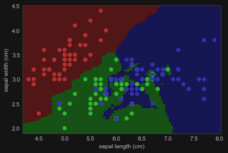

入门
阅读信息
665 个字 6 分钟 本页总访问量：加载中... 次
关于Scikit-Learn
Scikit-Learn 是一个采用简洁并灵活的 API ，向用户提供广为人知 的机器学习算法的Python包。它由上百个贡献者所开发，并且已经广泛运用至工业界和学术界中。
Scikit-Learn依赖于Python的 NumPy (Numerical Python) 和 SciPy (Scientific Python) 库，它们为Python中高效的数值和科学计算提供了支持。scikit-learn本身并不是为极大的数据集量身定做的，但是也有一些工作 是基于此的。
鸢尾花（iris dataset）分类的全流程例子
加载和读取数据
Python # 导入 sklearn
from sklearn import neighbors , datasets , preprocessing
from sklearn.model_selection import train_test_split
from sklearn.metrics import accuracy_score
import pandas as pd
# 加载数据
# https://scikit-learn.org/stable/modules/generated/sklearn.datasets.load_iris.html
iris = datasets . load_iris ()
# 查看iris原始数据
print ( pd . DataFrame ( iris . data , columns = iris . feature_names ) . head ())
print ( iris . target )
划分训练集和测试集
Python X , y = iris . data [:, : 2 ], iris . target
X_train , X_test , y_train , y_test = train_test_split ( X , y , random_state = 33 )
iris.data 是一个二维数组（150×4），代表 150 个样本的 4 个特征：
iris.target 是对应的标签（0, 1, 2），表示三种不同的鸢尾花品种。X，用于可视化或简化模型任务。这是一种基于投影的降维操作。
random_state=33：设置随机种子，确保每次运行都划分相同（便于结果复现）train_test_split 是 75% 训练集 + 25% 测试集
数据预处理
Python scaler = preprocessing . StandardScaler () . fit ( X_train )
X_train = scaler . transform ( X_train )
X_test = scaler . transform ( X_test )
scaler 是 标准化器 (StandardScaler)，它会 “学”训练集的均值与标准差 ，并记住这些值。scaler.transform() 用上一步“学到的均值和标准差”来 转换训练集和测试集 。即
\[
x' = \frac{x - \mu}{\sigma}
\]
只能用训练集来计算均值和标准差！
否则测试集就“泄漏”信息给模型了，违背机器学习的基本原则
模型训练
Python # 创建模型
knn = neighbors . KNeighborsClassifier ( n_neighbors = 5 )
# 模型拟合
knn . fit ( X_train , y_train )
这里用的是 KNN (KNeighborsClassifier)
模型预测评估
Python # 预测
y_pred = knn . predict ( X_test )
# 评估
accuracy_score ( y_test , y_pred )
Scikit-learn中的数据导入与表示
在Scikit-learn中，大多数的机器学习算法的数据在二维的数组或者矩阵中存储。这些数据可能是numpy数组，在某些情况下也可能是scipy.sparse矩阵。数组的大小应该是[样本（sample）数，特征（feature）数] 。
样本数（n_sample）: 样本的数目。每一个样本都是一个需要处理的独立个体（例如：需要被分类），一个样本可能是一个文档、一幅图片、一段音频、一段视频、一个天文学数据、数据库或者CSV文件中的一行，或者任意一个确定的数值的集合。特征数（n_feature）: 特征的数目，特征是描述一个样本的数值表达。特征一般是实数，不过在某些情况下也会是布尔值或者是离散数据。
特征数必须提前确定。但是对于给定的样本，特征可以是很大（百万级）的一个零占大多数的集合。这种情况下，scipy.sparse矩阵就派上了用场，用这个矩阵比numpy矩阵在存储上会更加高效。
Scikit-learn 中的其它内置数据
它们分为如下三种：
包内置数据： 这些小的数据集已经被集成在scikit-learn的安装包里面了，可以用sklearn.datasets.load_*去下载它供下载数据： 这些较大的数据可以供用户们下载，scikit-learn里面已经包含了下载这些数据集的流通道。这些数据可以在sklearn.datasets.fetch_*中找到。生成数据： 通过随机种子，可以通过现有模型随机生成一些数据集。它们可以在sklearn.datasets.make_*中找到
乳腺癌数据集 手写数字（Digits）数据集 波士顿房价（California Housing 替代版）
Python from sklearn.datasets import load_breast_cancer
X_breast , y_breast = load_breast_cancer ( return_X_y = True )
from sklearn.model_selection import train_test_split
X_breast_train , X_breast_test , y_breast_train , y_breast_test = train_test_split ( X_breast , y_breast , stratify = y_breast , random_state = 0 , test_size = 0.3 )
使用sklearn.model_selection.train_test_split拆分数据集并保留30％的数据集以进行测试。确保对数据进行分层（即使用 stratify参数）并将random_state设置为0。
使用 梯度提升分类器 （Gradient Boosting Classifier）进行训练和预测
Python from sklearn.ensemble import GradientBoostingClassifier
clf = GradientBoostingClassifier ( n_estimators = 100 , random_state = 0 )
clf . fit ( X_breast_train , y_breast_train )
y_pred = clf . predict ( X_breast_test )
计算准确率
Python from sklearn.metrics import accuracy_score
accuracy = accuracy_score ( y_breast_test , y_pred )
print ( 'Accuracy score of the {} is {:.2f} ' . format ( clf . __class__ . __name__ , accuracy ))
Python from sklearn.datasets import load_digits
X_digits , y_digits = load_digits ( return_X_y = True )
Python from sklearn.datasets import fetch_california_housing
X_house , y_house = fetch_california_housing ( return_X_y = True )
Scikit-learn 中的 Estimator 对象
每一个在scikit-learn中实现的算法都是表示为一个 "Estimator" 的对象。
Estimator 参数 ：一个 Estimator 对象的所有系数可以在它初始化的时候设置，这些系数拥有普适性的初始值。
Python model = LinearRegression ( normalize = True )
print ( model . normalize )
Estimator 模型参数 ：当Estimator用数据来拟合系数时，模型的系数是根据数据一步步得到的。所有的模型系数都是Estimator对象的属性，并且以一个下划线(underscore)结尾。
Python model = LinearRegression ( normalize = True )
...
model . fit ( X , y )
# 以下划线结尾，代表了一个拟合的系数
print ( model . coef_ )
print ( model . intercept_ )
# 残差
print ( model . _residues )
如何选择Estimator
下面是由sckit-learn的最重要的贡献者 Andreas Mueller 提供的一张图。它给出了什么情况下应该应用什么算法的总结。
学习曲线和验证曲线
绘制学习曲线
Python from sklearn.model_selection import learning_curve
from sklearn.ensemble import RandomForestClassifier
X , y = datasets . load_digits ( return_X_y = True )
train_sizes , train_score , test_score = learning_curve ( RandomForestClassifier ( n_estimators = 10 ), X , y , train_sizes = [ 0.1 , 0.2 , 0.4 , 0.6 , 0.8 , 1 ], scoring = 'accuracy' )
train_error = 1 - np . mean ( train_score , axis = 1 )
test_error = 1 - np . mean ( test_score , axis = 1 )
plt . plot ( train_sizes , train_error , 'o-' , color = 'r' , label = 'training' )
plt . plot ( train_sizes , test_error , 'o-' , color = 'g' , label = 'testing' )
plt . legend ( loc = 'best' )
plt . xlabel ( 'traing examples' )
plt . ylabel ( 'error' )
plt . show ()
绘制验证曲线
Python from sklearn.model_selection import validation_curve
X , y = datasets . load_digits ( return_X_y = True )
param_range = [ 10 , 20 , 40 , 80 , 160 , 250 ]
train_score , test_score = validation_curve ( RandomForestClassifier (), X , y , param_name = 'n_estimators' , param_range = param_range , cv = 10 , scoring = 'accuracy' )
train_score = np . mean ( train_score , axis = 1 )
test_score = np . mean ( test_score , axis = 1 )
plt . plot ( param_range , train_score , 'o-' , color = 'r' , label = 'training' )
plt . plot ( param_range , test_score , 'o-' , color = 'g' , label = 'testing' )
plt . legend ( loc = 'best' )
plt . xlabel ( 'number of tree' )
plt . ylabel ( 'accuracy' )
plt . show ()
本笔记修改并总结自Jake Vanderplas 和郑冠杰 老师的课件，源代码和license文件在GitHub 。
